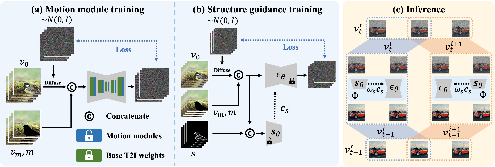

Recent advances in diffusion models have successfully enabled text-guided image inpainting. While it seems straightforward to extend such editing capability into video domain, there has been fewer works regarding text-guided video inpainting. Given a video, a masked region at its initial frame, and an editing prompt, it requires a model to do infilling at each frame following the editing guidance while keeping the out-of-mask region intact. There are three main challenges in text-guided video inpainting: (i) temporal consistency of the edited video, (ii) supporting different inpainting types at different structural fidelity level, and (iii) dealing with variable video length. To address these challenges, we introduce Any-Length Video Inpainting with Diffusion Model, dubbed as AVID. At its core, our model is equipped with effective motion modules and adjustable structure guidance, for fixed-length video inpainting. Building on top of that, we propose a novel Temporal MultiDiffusion sampling pipeline with an middle-frame attention guidance mechanism, facilitating the generation of videos with any desired duration. Our comprehensive experiments show our model can robustly deal with various inpainting types at different video duration range, with high quality.
|
In the training phase of our methodology, we employ a two-step approach. (a) Motion modules are integrated after each layer of the primary Text-to-Image (T2I) inpainting model, optimized for the video in-painting task via synthetic masks applied to the video data. (b) During the second training step, we retain the parameters in the UNet, $\epsilon_\theta$, and exclusively train a structure guidance module $\mathbf{s}_\theta$, leveraging a parameter copy from the UNet encoder. During inference, (c), for a video of length $N^\prime$, we construct a series of segments, each comprising $N$ successive frames. Throughout each denoising step, results for every segment are computed and aggregated. |
||
|  |
Hover over the videos to see the original video and text prompts.
| "A teddy bear walks on the beach." (80 frames) |
"A teddy bear dancing in Times Square" (256 frames) |
@article{zhang2023avid,
title={AVID: Any-Length Video Inpainting with Diffusion Model},
author={Zhang, Zhixing and Wu, Bichen and Wang, Xiaoyan and Luo, Yaqiao and Zhang, Luxin and Zhao, Yinan and Vajda, Peter and Metaxas, Dimitris and Yu, Licheng},
journal={arXiv preprint arXiv:2312.03816},
year={2023}
}